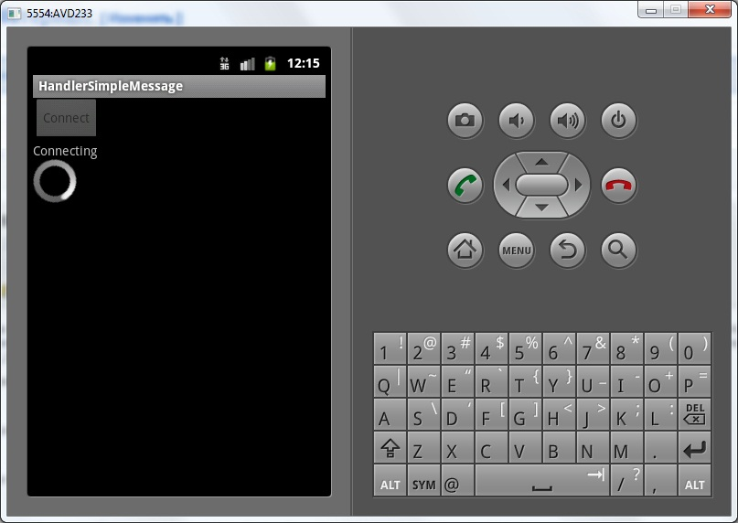
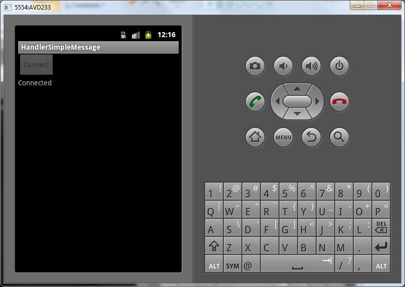
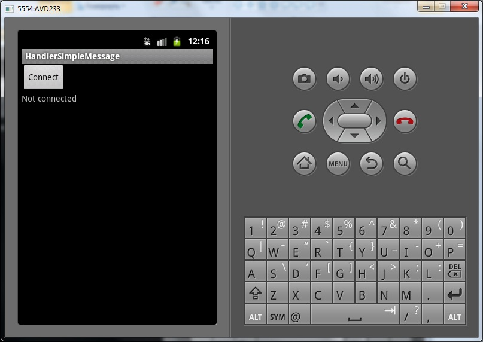

В этом уроке:
- посылаем простейшее сообщение для Handler
Надеюсь, вы прониклись предыдущим уроком и осознали, какая полезная штука Handler. Мы там отправляли ему сообщение. Сегодня сделаем это еще раз, но уже без кучи лишнего кода, зависающих экранов и ошибок приложения. Этакий чистый пример, чтобы закрепить.
Как мы помним, Handler позволяет класть в очередь сообщения и сам же умеет их обрабатывать. Фишка тут в том, что положить сообщение он может из одного потока, а прочесть из другого.
Сообщение может содержать в себе атрибуты. Сегодня рассмотрим самый простой вариант, атрибут what.
Напишем простое приложение-клиент. Оно, как-будто, будет подключаться к серверу, выполнять какую-то работу и отключаться. На экране мы будем наблюдать, как меняется статус подключения и как крутится ProgressBar при подключении.
При сменах состояния подключения мы будем отправлять сообщение для Handler. А в атрибут what будем класть текущий статус. Handler при обработке сообщения прочтет из него what и выполнит какие-либо действия.
Создадим проект:
Project name: P0811_ HandlerSimpleMessage
Build Target: Android 4.0
Application name: HandlerSimpleMessage
Package name: ru.startandroid.develop.p0811handlersimplemessage
Create Activity: MainActivity
strings.xml:
<?xml version="1.0" encoding="utf-8"?>
<resources>
<string name="app_name">HandlerSimpleMessage</string>
<string name="connect">Connect</string>
</resources>main.xml:
<?xml version="1.0" encoding="utf-8"?>
<LinearLayout
xmlns:android="http://schemas.android.com/apk/res/android"
android:layout_width="fill_parent"
android:layout_height="fill_parent"
android:orientation="vertical">
<Button
android:id="@+id/btnConnect"
android:layout_width="wrap_content"
android:layout_height="wrap_content"
android:onClick="onclick"
android:text="@string/connect">
</Button>
<TextView
android:id="@+id/tvStatus"
android:layout_width="wrap_content"
android:layout_height="wrap_content"
android:text="">
</TextView>
<ProgressBar
android:id="@+id/pbConnect"
android:layout_width="wrap_content"
android:layout_height="wrap_content"
android:indeterminate="true"
android:visibility="gone">
</ProgressBar>
</LinearLayout>Кнопка для старта подключения, TextView для вывода информации о статусе подключения и ProgressBar, работающий в процессе подключения.
MainActivity.java:
package ru.startandroid.develop.p0811handlersimplemessage;
import java.util.concurrent.TimeUnit;
import android.app.Activity;
import android.os.Bundle;
import android.os.Handler;
import android.view.View;
import android.widget.Button;
import android.widget.ProgressBar;
import android.widget.TextView;
public class MainActivity extends Activity {
final String LOG_TAG = "myLogs";
final int STATUS_NONE = 0; // нет подключения
final int STATUS_CONNECTING = 1; // подключаемся
final int STATUS_CONNECTED = 2; // подключено
Handler h;
TextView tvStatus;
ProgressBar pbConnect;
Button btnConnect;
/** Called when the activity is first created. */
public void onCreate(Bundle savedInstanceState) {
super.onCreate(savedInstanceState);
setContentView(R.layout.main);
tvStatus = (TextView) findViewById(R.id.tvStatus);
pbConnect = (ProgressBar) findViewById(R.id.pbConnect);
btnConnect = (Button) findViewById(R.id.btnConnect);
h = new Handler() {
public void handleMessage(android.os.Message msg) {
switch (msg.what) {
case STATUS_NONE:
btnConnect.setEnabled(true);
tvStatus.setText("Not connected");
break;
case STATUS_CONNECTING:
btnConnect.setEnabled(false);
pbConnect.setVisibility(View.VISIBLE);
tvStatus.setText("Connecting");
break;
case STATUS_CONNECTED:
pbConnect.setVisibility(View.GONE);
tvStatus.setText("Connected");
break;
}
};
};
h.sendEmptyMessage(STATUS_NONE);
}
public void onclick(View v) {
Thread t = new Thread(new Runnable() {
public void run() {
try {
// устанавливаем подключение
h.sendEmptyMessage(STATUS_CONNECTING);
TimeUnit.SECONDS.sleep(2);
// установлено
h.sendEmptyMessage(STATUS_CONNECTED);
// выполняется какая-то работа
TimeUnit.SECONDS.sleep(3);
// разрываем подключение
h.sendEmptyMessage(STATUS_NONE);
} catch (InterruptedException e) {
e.printStackTrace();
}
}
});
t.start();
}
}STATUS_NONE, STATUS_CONNECTING, STATUS_CONNECTED – это константы статуса. Их будем передавать в сообщении, в атрибуте what. Разумеется, названия и значения этих констант произвольны и взяты из головы. Вы можете придумать и использовать свои.
В onCreate мы создаем Handler и реализуем его метод handleMessage. Этот метод отвечает за обработку сообщений, которые предназначены для этого Handler. Соответственно на вход метода идет сообщение – Message. Мы читаем атрибут what и в зависимости от статуса подключения меняем экран:
STATUS_NONE – нет подключения. Кнопка подключения активна, TextView отражает статус подключения.
STATUS_CONNECTING – в процессе подключения. Кнопка подключения неактивна, показываем ProgressBar, TextView отражает статус подключения.
STATUS_CONNECTED – подключено. Скрываем ProgressBar, TextView отражает статус подключения.
В onCreate после создания Handler мы сразу отправляем ему сообщение со статусом STATUS_NONE. Для этого мы используем метод sendEmptyMessage. В этом методе создается сообщение, заполняется его атрибут what (значением, которое мы передаем в sendEmptyMessage), устанавливается Handler в качестве адресата и сообщение отправляется в очередь.
В методе onclick мы создаем и запускаем новый поток. В нем мы, с помощью sleep, эмулируем процесс подключения к серверу, выполнение работы и отключение. И, по мере выполнения действий, отправляем сообщения со статусами для Handler. Т.е. получается, что после нажатия на кнопку Connect статус меняется на STATUS_CONNECTING, две секунды идет подключение, статус меняется на STATUS_CONNECTED, 3 секунды выполняются действия и статус меняется на STATUS_NONE. Давайте проверим.
Все сохраним и запустим приложение.
Жмем Connect.
Подключение пошло. Появляется ProgressBar, меняется текст и неактивна кнопка Connect.

Проходит две секунды.
Подключение установлено. ProgressBar исчезает и меняется текст.

Проходит еще 3 секунды.
Подключение завершается. Кнопка Connect снова активна, а текст показывает, что мы не подключены.

Т.е. для простого обновления статуса из нового потока нам хватило атрибута what. Но кроме what сообщение может иметь еще несколько атрибутов. Рассмотрим их на следующем уроке.